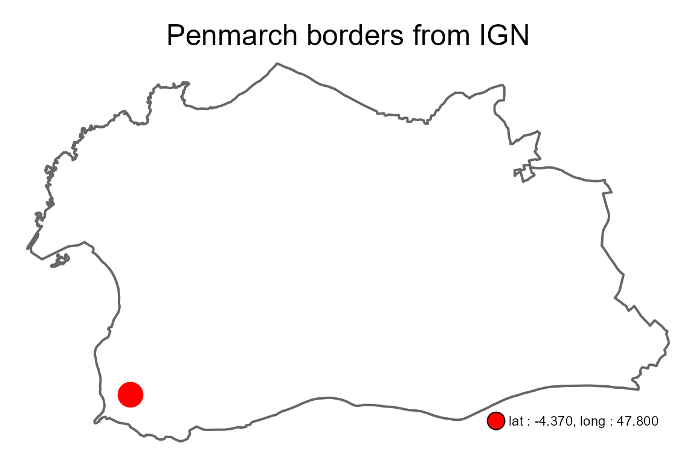
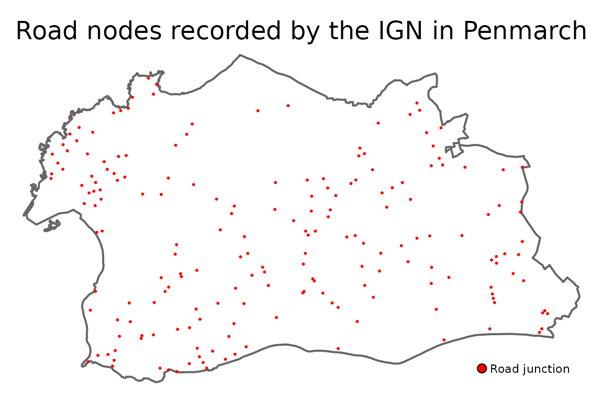

Getting started with happign
Paul Carteron
2022-03-16
Source:vignettes/Getting_started.Rmd
Getting_started.RmdBefore starting
We can load the happign package, and some additional packages we will need while we are here.
The WFS, WMS service
happign use two data type from IGN web service :
- WMS raster : data in raster format (.tiff)
- WFS : data in shape format (.shp).
More detailed information are available here for WMS and here for WFS.
To download data you need :
- Its layer name ;
- The API key corresponding to the layer ;
- Your area of interest in .shp format
The layer name and API key can be directly retrieved on the IGN website in the expert web services (I recommend you at this point to go and have a look).
For example, if I take the first category “Administratif”, I see that the API key is “administratif” and the first layer name in WFS format is “ADMINEXPRESS-COG.LATEST:arrondissement”
With happign, there is no need to go through the website because all api keys are available by running the function get_apikeys().
get_apikeys()
#> [1] "administratif" "adresse" "agriculture" "altimetrie"
#> [5] "cartes" "cartovecto" "clc" "economie"
#> [9] "environnement" "geodesie" "lambert93" "ortho"
#> [13] "orthohisto" "parcellaire" "satellite" "sol"
#> [17] "topographie" "transports"After choosing the API key containing our resource, you can access all layer names with get_layers_metadata().
Rq :
- This function can be a bit slow because it connects directly to the website so that the information is up to date.
- *The returned data correspond to the intersection with the shape bbox.
apikey <- get_apikeys()[1]
get_layers_metadata(apikey = apikey, data_type = "wfs")
#> # A tibble: 36 x 8
#> itemindex name title abstract keywords defaultcrs wgs84boundingbox
#> <int> <chr> <chr> <chr> <chr> <chr> <chr>
#> 1 1 ADMINEXPRESS-C~ ADMI~ édition~ Unités ~ 4326 -61.80983861776~6~
#> 2 2 ADMINEXPRESS-C~ ADMI~ édition~ Unités ~ 4326 -61.80983861776~6~
#> 3 3 ADMINEXPRESS-C~ ADMI~ édition~ Unités ~ 4326 -61.80983861776~6~
#> 4 4 ADMINEXPRESS-C~ ADMI~ édition~ Unités ~ 4326 -61.80983861776~6~
#> 5 5 ADMINEXPRESS-C~ ADMI~ édition~ Unités ~ 4326 -61.80983861776~6~
#> 6 6 ADMINEXPRESS-C~ ADMI~ édition~ Unités ~ 4326 -61.80983861776~6~
#> 7 7 ADMINEXPRESS-C~ ADMI~ édition~ Unités ~ 4326 -61.80983861776~6~
#> 8 8 ADMINEXPRESS-C~ ADMI~ édition~ Unités ~ 4326 -61.80983861776~6~
#> 9 9 ADMINEXPRESS-C~ ADMI~ édition~ Unités ~ 4326 -61.80983861776~6~
#> 10 10 ADMINEXPRESS-C~ ADMI~ édition~ Unités ~ 4326 -61.80983861776~6~
#> # ... with 26 more rows, and 1 more variable: metadataurl <chr>Downloading the data
WFS
For the example we will look at the beautiful town of Penmarch in France and we are going to get these borders.
The get_wfs() function connects to WFS service of the IGN that contain borders of the communes. It is also necessary to take a point inside penmarch so that the function detects all the shape that intersect this point.
penmarch_point <- st_sfc(st_point(c(-4.370, 47.800)), crs = 4326)
penmarch_borders <- get_wfs(shape = penmarch_point,
apikey = "administratif",
layer_name = "LIMITES_ADMINISTRATIVES_EXPRESS.LATEST:commune")
#> Request 1/1 downloading...
# Checking result
tm_shape(penmarch_borders) + # Borders of penmarch
tm_polygons(alpha = 0, lwd = 2) +
tm_shape(penmarch_point) + # Point use to retrieve data
tm_dots(col = "red", size = 2) +
tm_add_legend(type = "symbol", label = "lat : -4.370, long : 47.800",
col = "red", size = 1) +
tm_layout(main.title = "Penmarch borders from IGN",
main.title.position = "center",
legend.position = c("right", "bottom"),
frame = FALSE)
It’s as simple as that! Now you have to rely on your curiosity to explore the multiple possibilities that IGN offers. For example, who has never wondered how many road junctions there are in Penmarch?
Spoiler : there are 220 of them
dikes <- get_wfs(shape = penmarch_borders,
apikey = get_apikeys()[6],
layer_name = "BDCARTO_BDD_WLD_WGS84G:noeud_routier")
#> Request 1/1 downloading...
# Checking result
tm_shape(penmarch_borders) + # Borders of penmarch
tm_polygons(alpha = 0, lwd = 2) +
tm_shape(dikes) + # Point use to retrieve data
tm_dots(col = "red") +
tm_add_legend(type = "symbol", label = "Road junction", col = "red") +
tm_layout(main.title = "Road nodes recorded by the IGN in Penmarch",
main.title.position = "center",
legend.position = c("right", "bottom"),
frame = FALSE)
WMS raster
/! Code below isn’t evaluated because raster needs to be downloaded to disk. I can only recommend you to try it yourself.
For raster, the process is the same but with the function get_wms_raster(). There’s plenty of elevation resources inside “altimetrie” category. The basic one is the Digital Elevation Model (DEM or MNT in French).
Rq :
- The raster is not loaded into R’s memory. It is an on-the-fly sequential reading of files from network, without downloading the whole file first. In other words, it is quite possible to access the DEM of an entire region. The counterpart is the connection time which is about 30s;
- Raster from
get_wms_raster()are stars object from thestarspackage. To learn more about conversion between other raster type in R go check this out.
apikey <- get_apikeys()[4]
layers_metadata <- get_layers_metadata("altimetrie", "wms")
dem_layer_name <- layers_metadata[2, "name"]
mnt <- get_wms_raster(shape = penmarch_borders,
apikey = apikey,
layer_name = dem_layer_name,
resolution = 25,
filename = "best_raster_name")
mnt[mnt < 0] <- NA # remove negative values in case of singularity
names(mnt) <- "Elevation [m]" # Rename raster ie the title legend
tm_shape(mnt) +
tm_raster(colorNA = NULL) +
tm_layout(title = "DEM of Penmarch", frame = FALSE)